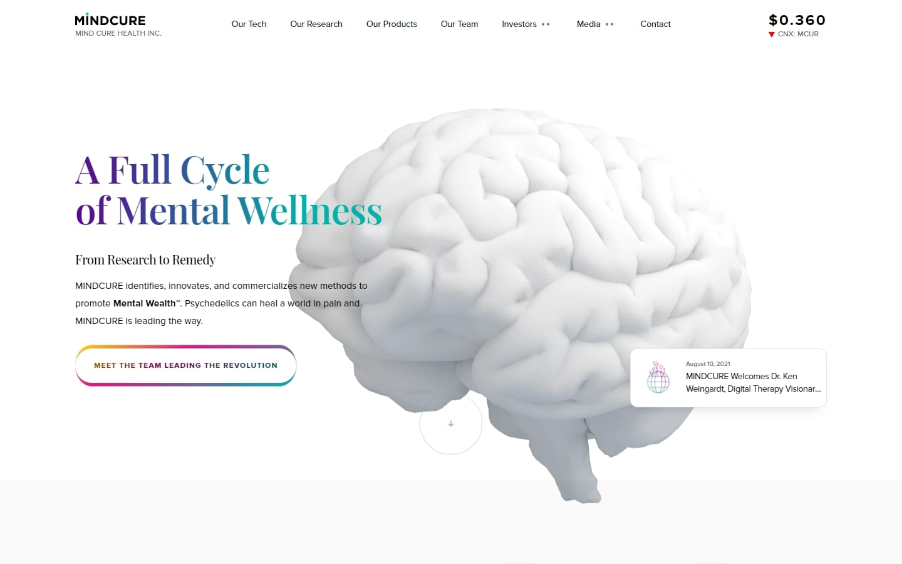
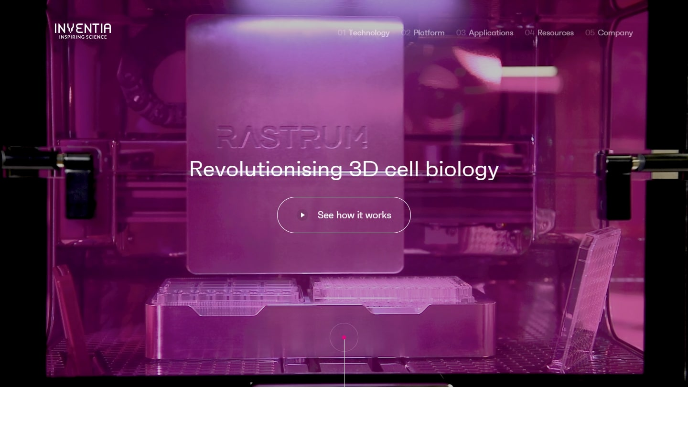

Websites are a great way to show off your Biotech company. Biotechnology Websites can be used as a way of advertising different Biotech products, industry trends, research, careers, latest biotechnology news and services, or they can simply be informational websites that allow people to learn more about the Biotechnology sector. In this blog post, we will share some of the Best Biotech Websites on the internet, these 40 awesome websites have something for everyone!
1. Enveda
Why it works: First on our list is Enveda’s website. The layout is very rigid, with cool visuals and movements, and robust data presentations. All of this combines to provide a genuinely fantastic and memorable experience.
2. Strateos
Why it works: Showcasing a very personalized choice of typefaces and colors, the website of this San Francisco-based biotech company had a unique, creative, and fascinating future technology vibe. One major distinction is their bespoke artworks, which not only look fantastic but also work well with the overall concept.
3. Mindcure
Why it works: A very clean design but it is adorned with a wide range of vibrant hues. We also appreciate how those little movements add more life to the user experience. What about the bespoke designs? They’re second to none.

Best Biotech Company Web Design
4. Qureator
Why it works: This is an example of balance and innovation in which photographic images blend well with geometric forms. The modern logo design, in addition to the color scheme that complements what they do or provide, is also appreciated.
5. Biovectra
Why it works: The design of this responsive website is created in such a way that it can be easily navigated by anyone. The homepage provides sections that lead to the company bio, open biotechnology & pharmaceutical jobs, and news articles pages. It’s built on a clean structure, with plenty of bright colors and custom images that all add up to an engaging, fun, and personal biotech industry website.
6. Xytex
Why it works: Despite its scientific focus, Xytex’s website is both clean and tranquil, with a comprehensive collection of material that you’ll want to read from start to finish. Everything felt engaging, promising, and delightful.
7. theLAB Berkeley
Why it works: The website’s visual appeal is enhanced by strong animations and interactivity. The material was kept to the bare minimum. Highly modern and tactile experience everywhere.
8. Inventia
Why it works: Using a modern and sleek layout, Inventia manages to present its original graphics (moving and static) in a visually appealing way. The site design felt futuristic without being bombarded by too many animations or interactions.

Biotech Websites
9. Single Cell Technology
Why it works: This biotech site has a fantastic hero background video that is both relevant and catchy. The design has a clear aesthetic, which complements the theme of the biotechnology field website. Overall, solid branding and user experience.
10. Aanika
Why it works: This biotechnology website is not only aesthetically appealing but also empowers all visitors to truly feel involved in the process. From beginning to end, one can sense that Aanika is prepared to take the steps necessary to achieve a brighter world.
11. Bionic
Why it works: ‘Breathtaking’ is the best word for this website design. Everything is well-thought and executed, and there’s no compromise to the tiniest of detail. The graphics, effects, and superb development bring the whole website to another level.

12. Ambys Medicines
Why it works: Ambys has designed a really unique medicine-focused website that we’d love to include. The retractable footer, stunning graphics and pictures, and interactive elements like the menu are some of our favorites.
13. Radix
Why it works: Unlike the usual ‘lab’ web designs, Radix’s website is rather on a whole new different sport. Featuring humor and creativity, the design also has animations that you don’t want to miss.
Best Biotech Websites
14. Cerveau Technologies
Why it works: Simple but very professional. No signs of overdo. We adore how the design divides large relevant information into manageable chunks while still being attractive and pleasant to browse.
15. Catalys Pacific
Why it works: This website design has some amazing visuals, clever scripts, and exciting interactions—perhaps the finest things we could say about it.
16. KCR
Why it works: Despite its scientific appearance, we’d want to keep this website on our list because of how it piques interest and encourages innovation. The addition of audio and video components adds to the vigor of the site.
17. Epygenix
Why it works: One of the most distinctive features of this web design is that all of the text on the site is easy to read. The buttons and other interactive elements are properly positioned for increased visibility.
18. Healthx
Why it works: The quality of the work for this website is outstanding. Starting with the page load animation, the pulsing waves at the background, the custom moving 3D elements, everything has been given careful consideration.

Biotechnology sector website design
19. Ekso Bionics
Why it works: The website is great at portraying, explaining, and visualizing the science and impact of their exoskeleton technology. They utilized powerful graphics and great pictures in a stylish format.
20. Arbitrage Technologies
Why it works: The hero background is a catchy and trendy video. It’s short and compact, yet it has good organization of content and layout.
21. Seerave Foundation
Why it works: One of the most minimalistic in this list is Seerave Foundation’s website design. Despite the simplicity, the video’s movement and subtle animations that occasionally appear throughout the site pique interest in visitors.
22. Celltreat
Why it works: Selling scientific products doesn’t have to be boring. Celltreat gives us all a treat with their website design and experience. The humorous illustrations of the scientists are a fantastic touch.
23. Cone Bioproducts
Why it works: Another modern type of website design, but in a more minimal way. We love the products section where they use elegant icons against a clean white backdrop.

Best Biotech Sites
24. Merck
Why it works: Merck’s website has an out-of-the-box layout that gets you hooked into the story and mission of this company. We don’t see any visual noise that might detract the visitors from the experience they try to create.
25. Sprout AI
Why it works: We particularly love the green color scheme of this site, which is very fitting for their product. The design is very clean and straightforward while keeping every section useful for the visitors.
26. Wyss Center
Why it works: Based on the photos alone, one may easily comprehend their capabilities. We adore the simplicity of the website from top to bottom as well. The footer is also a gateway to additional options, thanks to how striking it is.
27. Vibrants
Why it works: Yes, this is an e-commerce site, but a very good one at that. Aside from the generous white space and the subtle movements on the page, we also love how the overall design promotes and sells the product.
28. Element
Why it works: Despite the fact that this website design is rather technical and scientific, it nevertheless succeeded in making everything simple to find on the home page. Buttons are clear and obvious, with a large number of photos but no more than necessary.
Best Biotech Website Design
29. CyberMDX
Why it works: This seemingly ordinary website design has a lot of tricks up its sleeves. The way they illustrate their DCRM’s layers of security is top-notch.
30. Akouos
Why it works: Akouos implemented amazing custom graphics against photography. The design’s appearance helps to create a sense of hope, trust, and innovation.
31. ClicHealth
Why it works: Despite the fact that there is a lot of activity on this website design, it does not always imply that it is going wrong. It’s a treat because no area looked the same. The floating buttons pinned to the top, and sidebar menu, were also wonderful.
32. LuminUltra
Why it works: LuminUltra has a very professional-looking website. The choice of typeface is perfect for the design. We also love the ample amount of whitespace distributed from top to bottom.
33. Nectow Lab
Why it works: Nectow Lab’s website design offers a breath of fresh air for this list. Featuring minimal yet customized graphics, theme-specific images, and the right amount of body text, this design is also a solid contender.
Best Biotech Websites
34. Ōura
Why it works: The flagship product of this company, the Oura Ring, is a work of art that will undoubtedly improve human health and life. Thankfully they have a colorful narrative website on which to promote it.
35. Intomics
Why it works: The floating dots on the hero section is fun to play with! Playfulness aside, we love how this biotechnology website caters to a true good mix of graphics, animations, videos, and photos.
36. LENS by Science
Why it works: If you’re a fan of Apple’s website, the LENS’ website will seem quite similar. What we particularly love the most is their extensive typography work interlaced with great transition animation from one page to another.
37. Poseida Therapeutics
Why it works: Serious, but the magnitude of the results they promise to deliver in their services must also be taken seriously. The ‘what if, what now, and what next’ that describes the effectiveness of their work is especially appealing to us.
38. Wyss Institute
Why it works: Not to confuse with the other Wyss website in this list, we also love to enlist this website design because of its good layout. Replacing a normal hero image they utilized a grid system containing the latest biotechnology news, industry news, and announcements. The greatest aspect of the home page you need to see is their ‘Translation Model’ section.
Biotech Websites
39. BioMarin
Why it works: The color palette of the website is surprisingly appropriate to the message they’re trying to send. The entire website appeared promising, pleasant and hopeful to the audience due only to the right combination of graphics, solid colors, and friendly faces.
40. Lammel Laboratory
Why it works: We appreciate the website’s excellent content organization. Everything appeared to be in its proper location. The sticky navigation containing links to research, industry news and individual pages of the researchers makes this biotechnology website easy to explore. The branding is also obvious and powerful without detracting from the message they convey.
Conclusion
We have put together a list of the 40 best biotechnology websites in order to give you some inspiration. These are some of the leading biotech companies demonstrating their research in genetic engineering, gene therapy, genetic epilepsy, pharmaceuticals, central nervous system diseases, precision genetic medicines, and health science using industry-standard web design and development practices. It is our hope that this will help spark your creativity and find new ways to promote your company’s work or products online. If you would like to improve your current website or if you’re developing your own biotech website from scratch we will design a custom mockup of your new website before you sign or pay for anything.